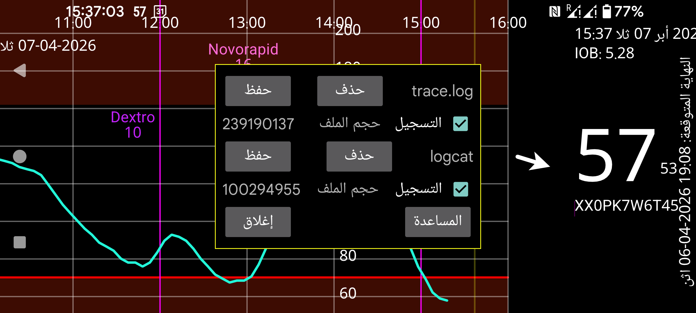

هذه نسخة من Juggluco مخصّصة للتسجيل. يمكن إنشاء ملفات السجل في /data/data/tk.glucodata/files/logs
يحتوي trace.log على رسائل السجل التي ينشئها Juggluco نفسه. ويحتوي logcat.txt على رسائل السجل التي ينشئها Android فيما يتعلق بـ Juggluco. ويمكنك حذفهما أو حفظهما كلٌّ على حدة.
إذا واجهت مشكلات، فيمكنك إرسال trace.log وlogcat.txt إلى jaapkorthalsaltes@gmail.com بالإضافة إلى وصف للمشكلات التي واجهتها خلال الفترة التي أُنشئت فيها هذه الملفات.
حجم الملف : حجم ملف السجل.
Logging : تشغيل التسجيل في trace.log أو logcat.
Delete : حذف ملف السجل.
Save : حفظ ملف السجل في مكان يمكن للتطبيقات الأخرى الوصول إليه.
Close : إغلاق هذا العرض.